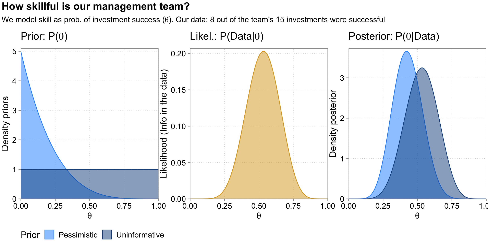
A Brief Intro to Bayesian Inference for Accounting Research
Harm Schütt, Tilburg University
2023-10-05
Photo by Riho Kroll
What is Bayesian statistics?
What is it useful for?
Frequentist: \(P(Data|Hypothesis)\)
Bayesian: \(P(Hypothesis|Data)\)
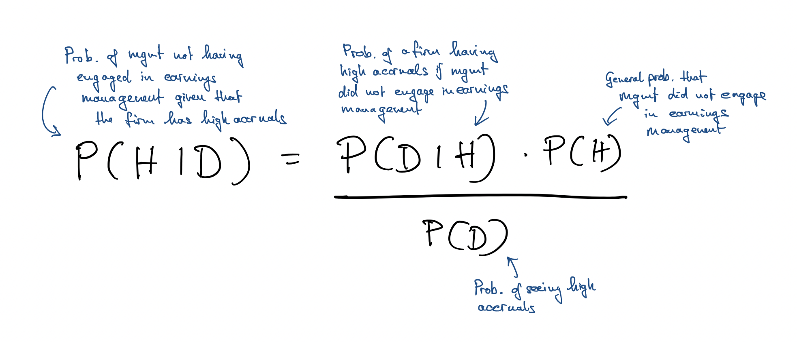
Example: Number of successful investments \(y \sim Binom(y|N,\theta)\)
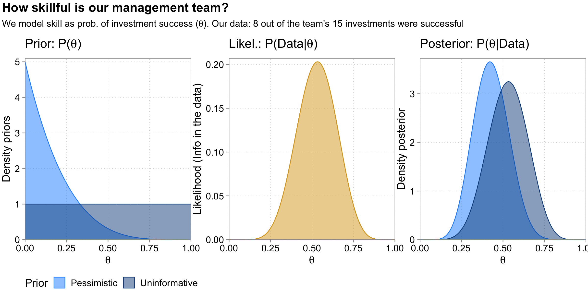
Photo by Erik Mclean
Not because of the philosophical differences!
To better understand frequentist statistics
To add another tool to our workbench:
\[R_{i,t} = a_i + b_i * X_{i,t} + u_{i,t}\]
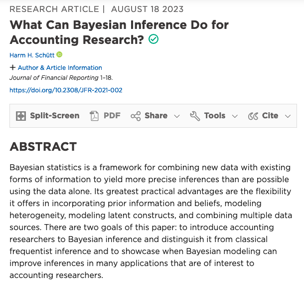
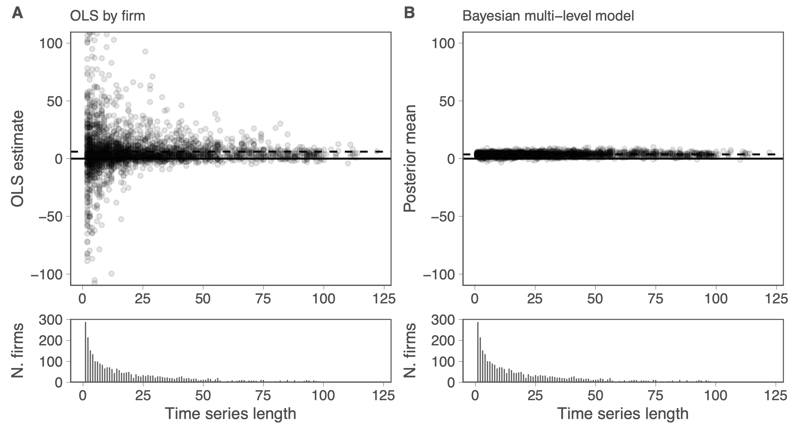
Cross-learning the prior. Helps discipline noisy estimates
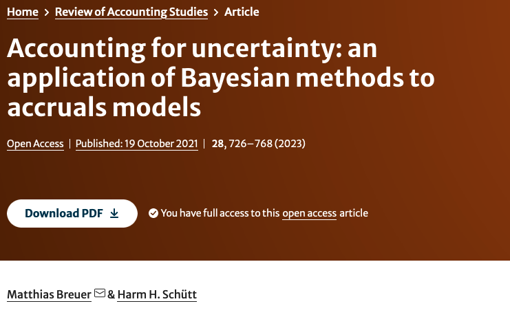
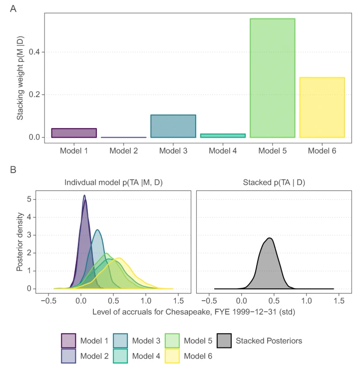
When we do not trust our models we should average. Increases power and reduce false positives in tests for opportunistic earnings management
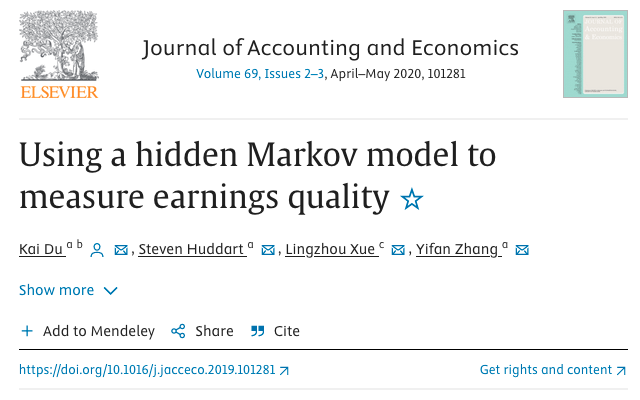
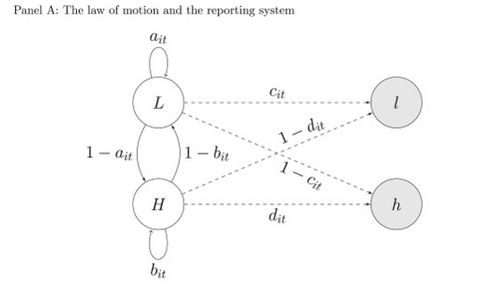
How well do earnings reveal an unobserved true state of the firm?
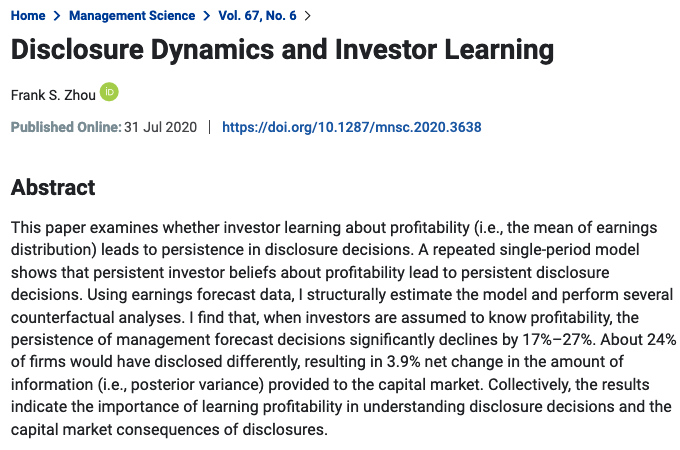
Disclosures become more (less) frequent when investors’perception of the firm is worse (better) than the true profitability
Modeling a data-generating-process (incl. priors) allows us to include more information/assumptions into our analysis
Data is random. The logic behind hypothesis tests.
The importance of test power
Overfitting is a serious issue
\[y = a_0 + a_1 \times x + u\]
# A tibble: 50 × 5
id a0 a1 plabs first_sample
<int> <dbl> <dbl> <chr> <fct>
1 1 0.760 4.38 (0.8,4.4) 1
2 2 1.76 -0.0400 (1.8,0) 0
3 3 6.46 0.738 (6.5,0.7) 0
4 4 3.20 0.561 (3.2,0.6) 0
5 5 0.328 5.24 (0.3,5.2) 0
6 6 0.786 6.17 (0.8,6.2) 0
7 7 -0.877 -1.58 (-0.9,-1.6) 0
8 8 2.18 -3.30 (2.2,-3.3) 0
9 9 -0.345 1.00 (-0.3,1) 0
10 10 -0.545 3.49 (-0.5,3.5) 0
# ℹ 40 more rows\[y = 1 + 2 \times x + u ,\ u \sim N(0, 20),\ x\sim N(0,1)\]
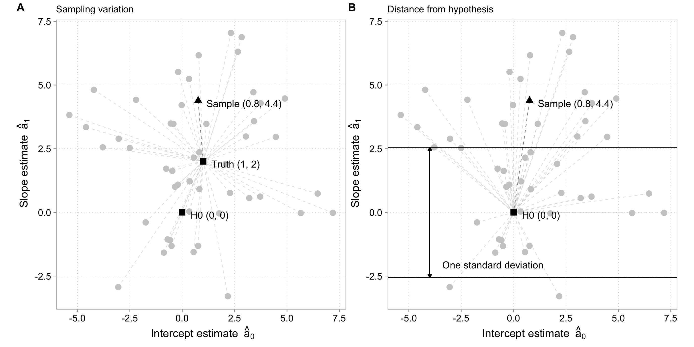
Test logic:
Normalization: S.E. depends on assumed behavior of unmeasured determinants (\(u\)) and \(N\)
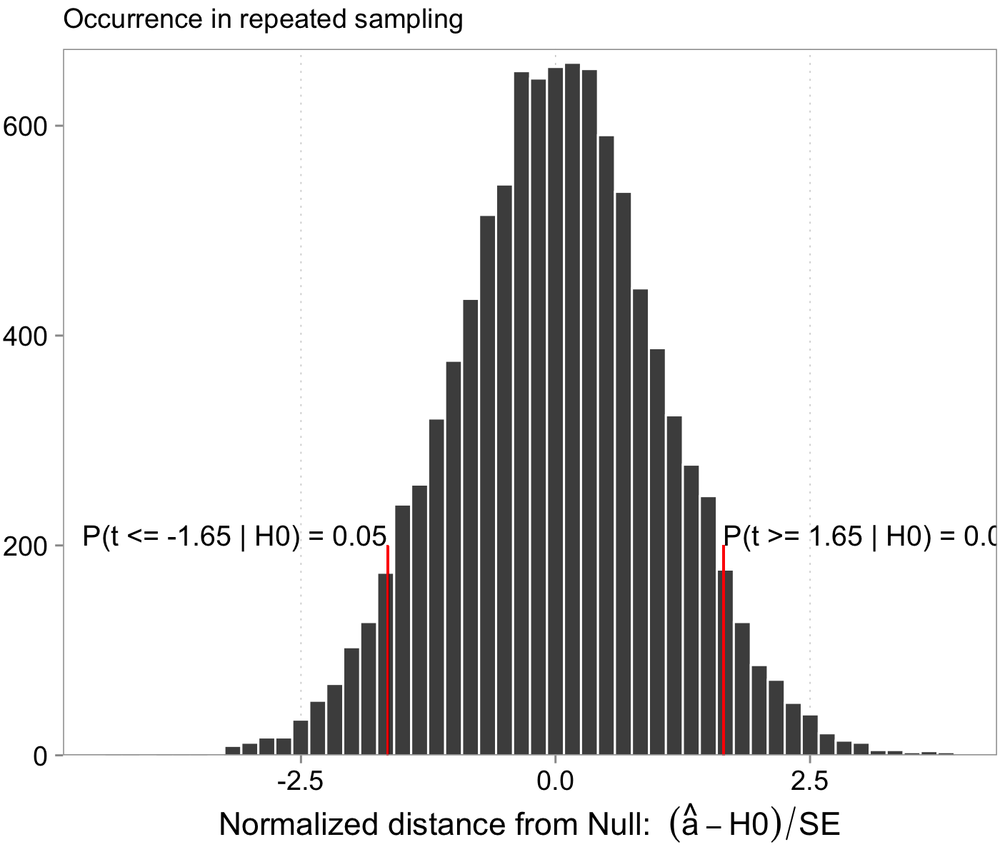
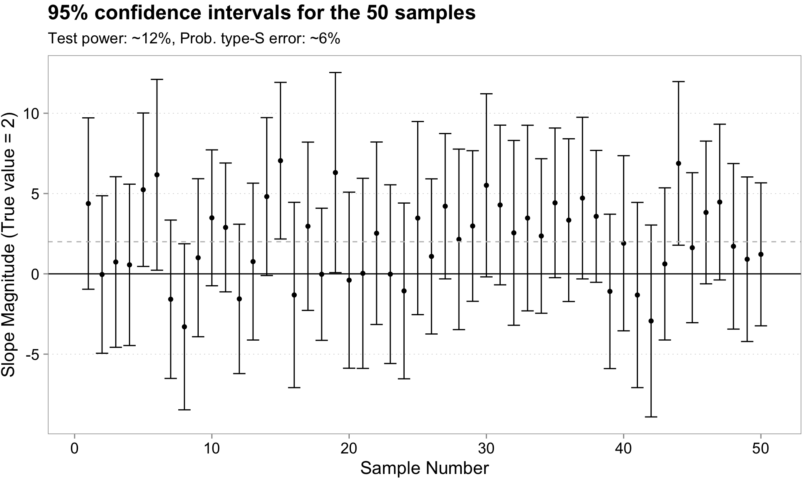
Well … Let’s remember this picture
Effective N goes down quickly once we want to estimate heterogeneity in something we care about
Drawing 5 samples from \(y \sim N(-200 + 10 * x, (x+30)^2\)
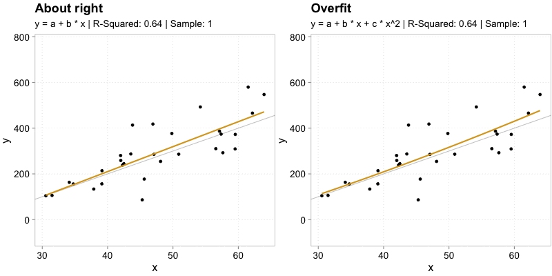
Overfitting means we fitted sample idiosyncrasies
| Sample | In-Sample MSE Difference | Avg. Out-of-Sample MSE Difference |
|---|---|---|
| 1 | -8.5 | -15.1 |
| 2 | -1419.8 | 1770.0 |
| 3 | -778.7 | 901.7 |
| 4 | -2735.2 | 4602.0 |
| 5 | -8.4 | -15.1 |
When we model heterogeneity or use complicated models, both issues become very important. Need to be dealt with.
Priors regularize, which combats overfitting and extreme estimates
Priors can be learned from data
A lot of extra information can be flexibly modeled
First we define the DGP:
Likelihood \(P(D | H)\):
\[y = a_0 + a_1 * x + \epsilon, \,\,\,\, \epsilon \sim N(0, \sigma)\]
Coefficient priors \(P(a_k)\):
\[a_k \sim N(0, 100), \,\,\,k \in (0, 1)\]
Residual variance prior \(P(\sigma)\):
\[\sigma \sim Exponential(\frac{1}{21})\]
We basically get the same inference as with classic OLS
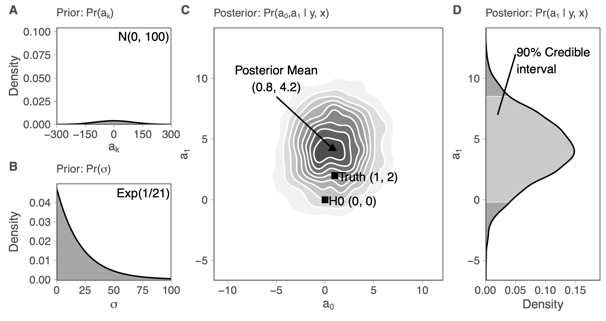
Likelihood \(P(D | H)\):
\[y = a_0 + a_1 * x + \epsilon, \,\,\,\, \epsilon \sim N(0, \sigma)\]
Coefficient priors \(P(a_k)\):
\[a_0 \sim N(0, 100)\]
\[a_1 \sim N(0, 4)\]
Residual variance prior \(P(\sigma)\):
\[\sigma \sim Exponential(\frac{1}{21})\]
Our posterior beliefs about \(a_1\) have moved closer to the truth.
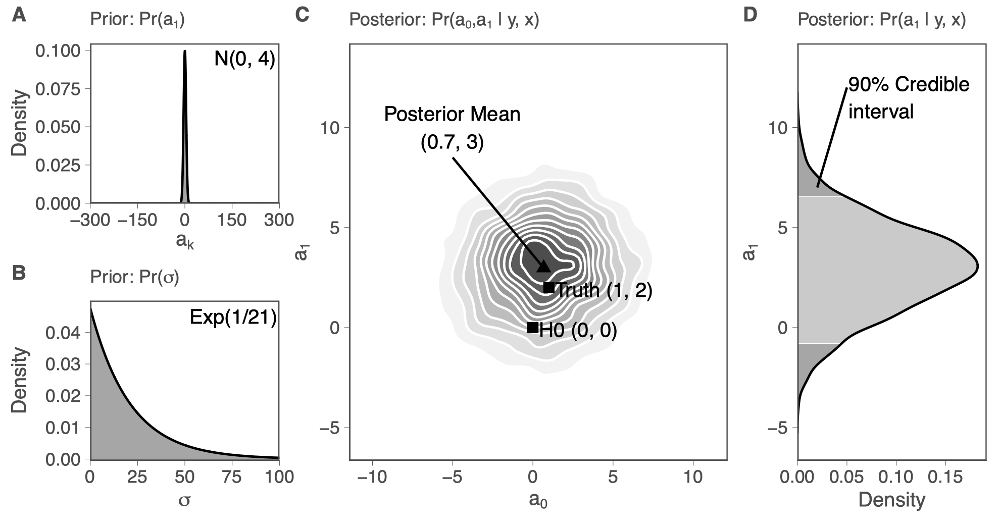
Assume \(y\sim N(\mu, \sigma^2)\) with known sigma and a prior for \(\mu \sim N(\mu_0, \sigma_0^2)\)
Then the posterior is a weighted average of the form:
\[P(\mu | y) \sim N\left(\frac{1}{\frac{1}{\sigma^2_0} + \frac{n}{\sigma^2}} * \left(\frac{1}{\sigma^2_0}*\mu_0 + \frac{n}{\sigma^2}*\frac{\sum^n y}{n}\right), \frac{1}{\frac{1}{\sigma^2_0} + \frac{n}{\sigma^2}}\right)\]
An implication of the weighted average formula
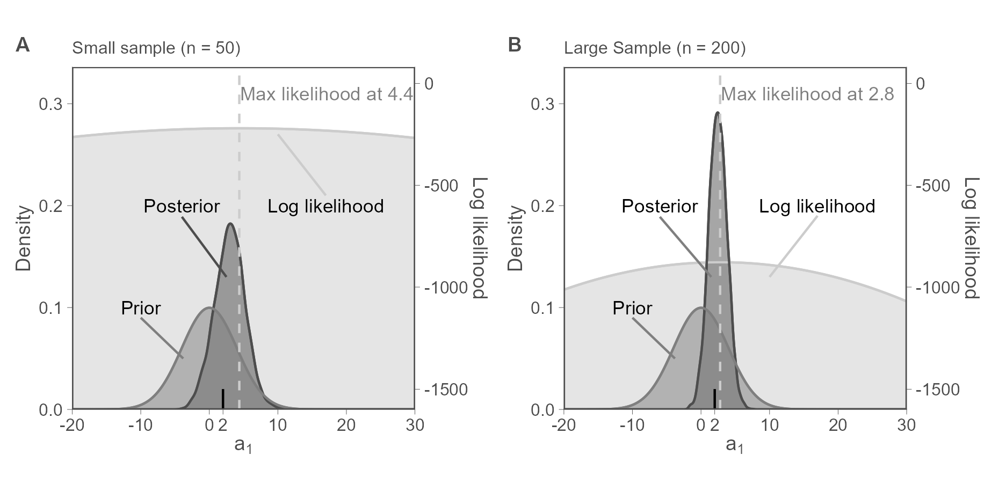
Especially relevant when:
If we can assume that only a few covariates are effectively non-zero, we want sparse priors
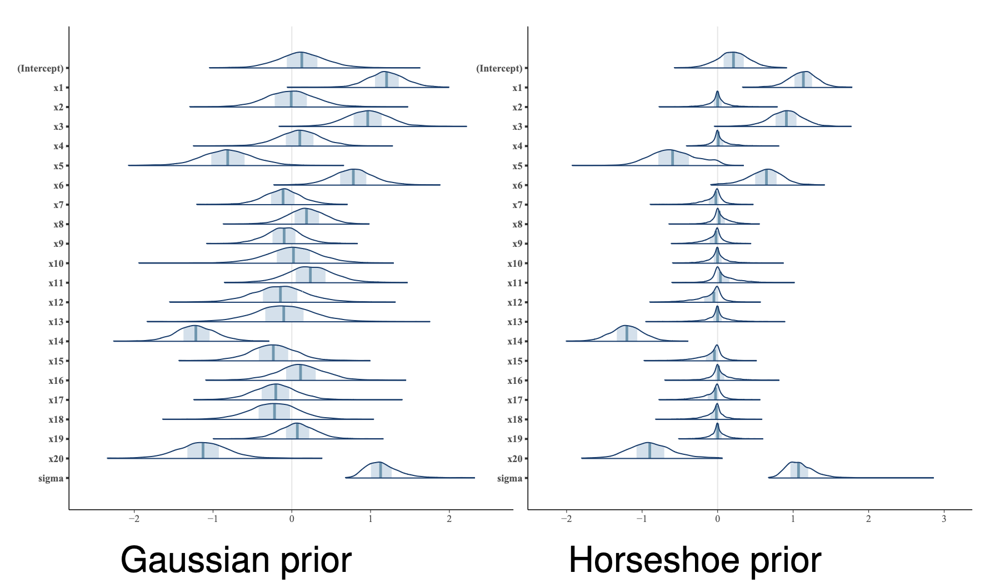
We can estimate priors, assuming that units come from the same distribution
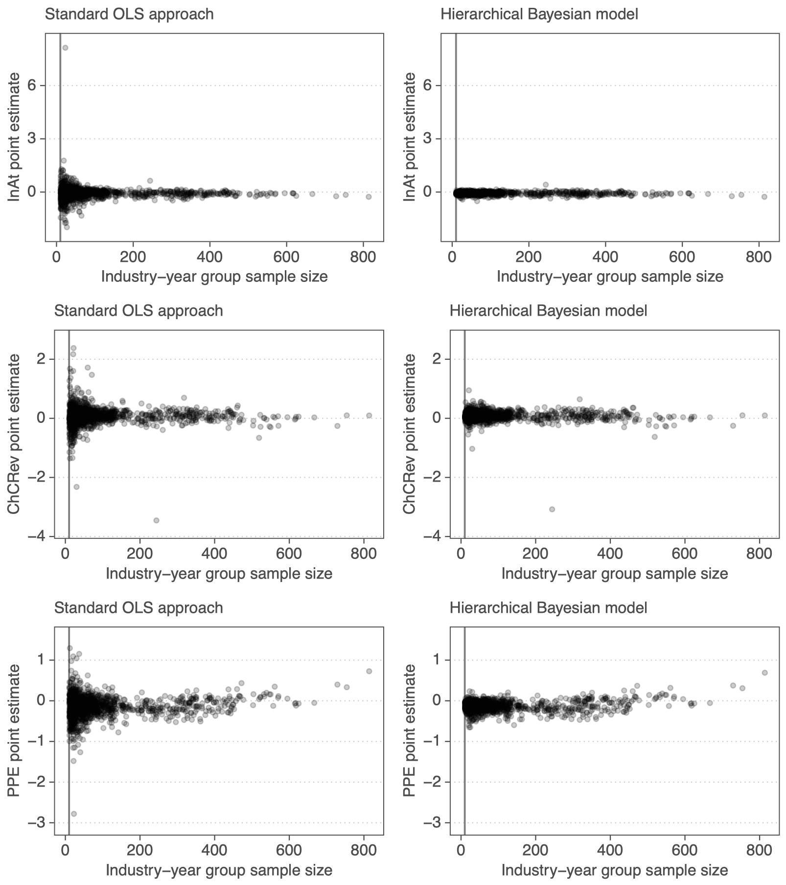
\[ \begin{align} TA_{ijt} & = \beta_{0,jt}InvAt_{ijt-1} + \beta_{1,jt}\triangle CRev_{ijt}\\\nonumber & + \beta_{2,jt}PPE_{ijt} \end{align} \]
Priors:
\[ \begin{eqnarray} \label{eq:priors} \begin{pmatrix} \beta_{0,j,t}\\ \beta_{1,j,t}\\ \beta_{2,j,t} \end{pmatrix} & \sim & N\left(\left(\begin{array}{c} \mu_0\\ \mu_1 \\ \mu_2 \end{array}\right),\left(\begin{array}{ccc} \sigma_{0} & \rho_{0,1} & \rho_{0,2} \\ \rho_{0,1} & \sigma_1 & \rho_{1,2} \\ \rho_{0,2} & \rho_{1,2} & \sigma_2 \end{array}\right)\right) \quad \forall j,t \end{eqnarray} \] Hyper-priors:
\[ \begin{align} \mu_d & \sim N\left(0, 2.5\right) \quad \sigma_d \sim Exp\left(1\right) \quad \forall d \nonumber \\ \rho & \sim LKJcorr(2) \end{align} \]
Measurement error has serious consequences for our inferences
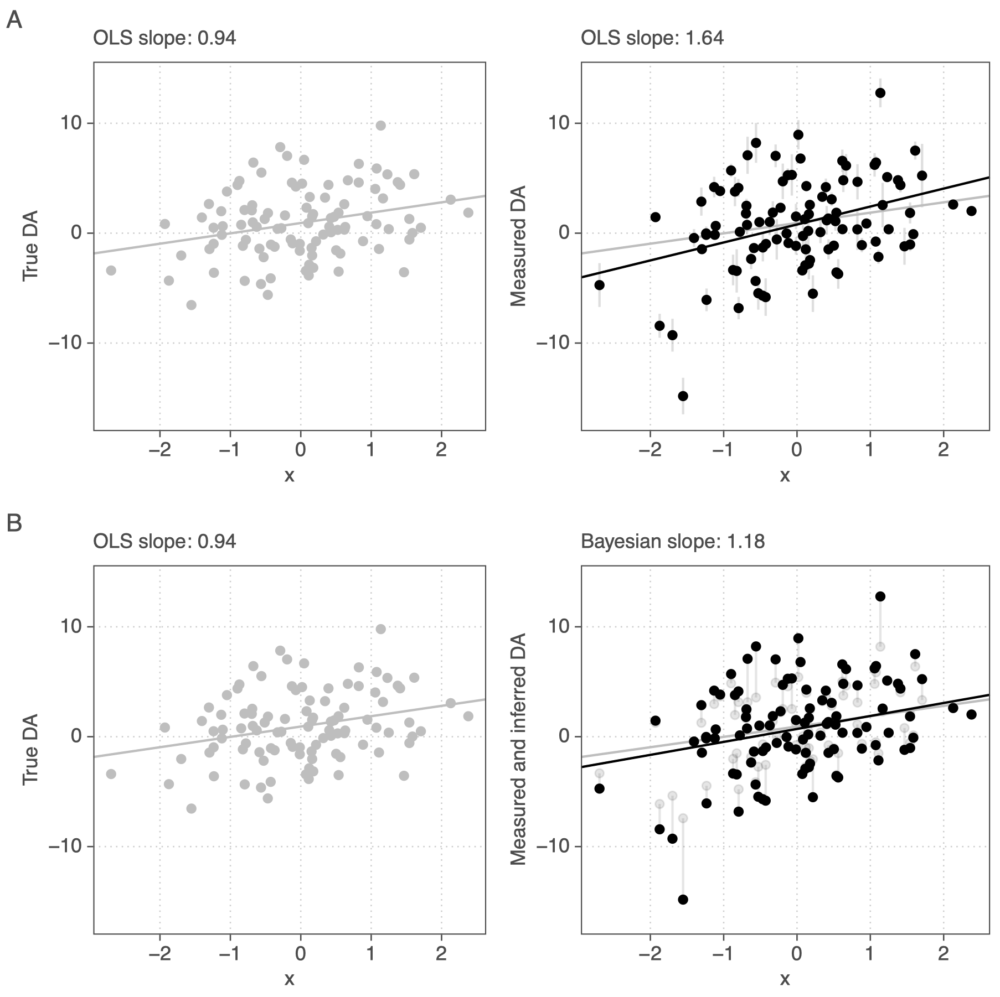
We want to estimate newspaper slant. Assume that one needs room for interpretation to slant news:
\[ \begin{align} \textit{NrNegWords}_{i, j} & \sim \text{Binom}(N_{words}, p_{neg, i, j})\\ \nonumber \text{logit}(p_{neg, i, j}) & = \textit{RoomInt}_{j} \times {OutlNeg}_{i} + BadNews_{j} \end{align} \]
Model is not identified because: \(Room_j \times Outl_i = c*Room_j \times Outl_i/c\)
Priors (non-negative \(RoomInt\) + prior scale for \(Outl\)) identify it:
\[ \begin{eqnarray} \begin{pmatrix}log(Room_j)\\ News_j \end{pmatrix} & \sim & N\left(\left(\begin{array}{c} \mu_{LRoom}\\ \mu_{News} \end{array}\right),\left(\begin{array}{cc} \sigma_{LRoom} & \rho \\ \rho & \sigma_{News} \end{array}\right)\right)\\ \nonumber Outl_i & \sim & N(0, 1) \end{eqnarray} \]
Bayesian statistics is not the only way to do all this. It’s advantage lies in its flexibility and in giving us powerful uncertainty measures for free.
Thank you for your attention
Next up: coding practice ;)